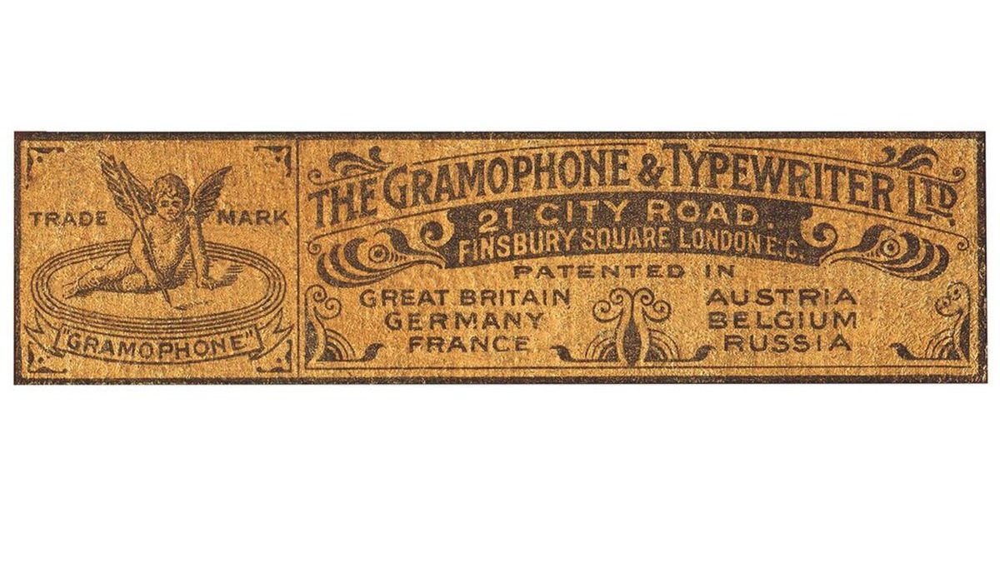

“My name is Gauhar Jaan!”
↗ Recording linkIn November 1902 the Gramophone Company turned two Calcutta hotel rooms into a studio. The singer who stepped up to the horn was Gauhar Jaan, a courtesan-artist at a time when reformers wanted her profession abolished. She sang a khayal in Raag Jogiya and then announced her own name at the end, so nobody could mistake whose voice it was. She went on to record some 600 songs in about ten languages. She was not supposed to be the voice of India's first records, and she made sure she was.
Read more →